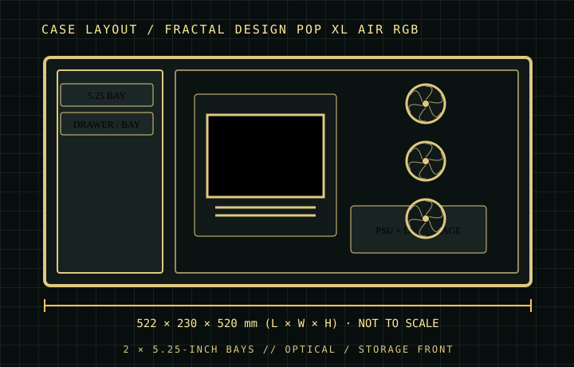

[ CASES // IDENTIFIED CHASSIS ]
Fractal Design Pop XL Air RGB
The Pop XL Air RGB combines a mesh intake with unusually flexible front storage: the front trim conceals two external 5.25-inch bays, including a storage drawer. It is a full-size tower, not a standard Pop Air mid-tower; the larger dimensions and 8-slot layout matter when fitting long GPUs and legacy optical hardware.

MODEL SCOPE: Specifications describe the named enclosure generation, not every visually similar case or retail bundle. Published maximums are component-envelope limits; verify the exact SKU, installed fans/radiators, connectors, and manufacturer manual before purchase or assembly.
Dimensions & compatibility
| Cataloged model | Fractal Design Pop XL Air RGB |
|---|---|
| Generation / class | 2022 · ATX / width-limited E-ATX airflow tower |
| External dimensions | 522 × 230 × 520 mm (L × W × H) |
| Motherboard fit | Mini-ITX, Micro-ATX, ATX and E-ATX up to 280 mm wide. |
| Drive compatibility | Two external 5.25-inch bays; three internal 3.5-inch mounts (also accept 2.5-inch drives) plus two dedicated 2.5-inch mounts. |
| Graphics card | Up to 455 mm, subject to front radiator/fan arrangement. |
| CPU air cooler | Up to 185 mm tower height. |
| Power supply | Up to 205 mm. |
| Fans and radiators | RGB SKU includes three 120 mm front and one 120 mm rear Aspect RGB fans. Front supports up to 3×120/2×140 mm and a 360/280 mm radiator; top supports up to 2×120/140 mm and 280 mm radiator; rear supports 120/140 mm fan/radiator. |
Fit notes for this layout
The 5.25-inch compartments provide a rare route for optical drives and the included drawer, but using them competes with modern clean-front appearance. Verify the exact TG/RGB package for included fan lighting and confirm radiator thickness against front GPU clearance.
- The two 5.25-inch bays are externally accessible; check optical-drive bezel and tray depth before installing a long device.
- E-ATX width is limited to 280 mm, and the advertised 455 mm GPU fit assumes the front assembly leaves the corresponding space.
- Three 3.5-inch positions can be shared with 2.5-inch drives; optional mounts and the dedicated SSD positions change the final supported mix.
Source record
- Fractal Design — Pop XL Air RGB product sheetManufacturer dimensions, compatibility, bay and cooling limits.
- Fractal Design — Pop XL Air product familyManufacturer product overview and SKU identification.
- Basic Tutorials — Fractal Design Pop XL Air reviewIndependent review of build, storage and airflow features.
Case specifications are manufacturer-rated maximums unless stated otherwise. Component shape, mounting hardware and assembly order can reduce practical clearance; consult the exact revision manual when dimensions are critical.